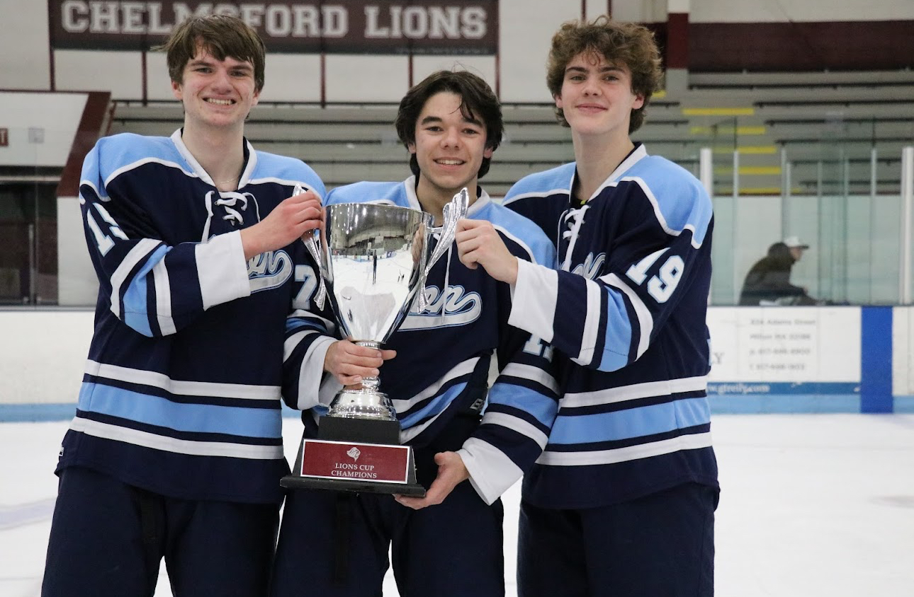
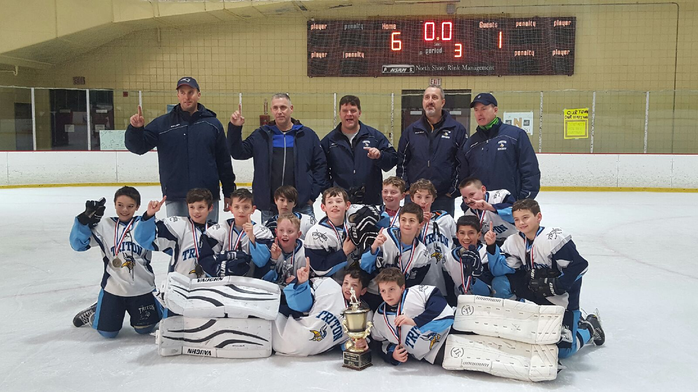

kregnier.github.io
Hello World
I'm hosted with GitHub Pages.
The Worlds Best Website
The Worlds Best Website
Hello, I am Kyle Regnier the developer of this website. I am a student at Saint Anselm College in Manchester New Hampshire. I am here as a Finance Major and plan to minor in data analytics. Some background of me is that I am an athlete, playing both hokcey and lacrosse, go to the gym consistently and enjoy being on the water.
I am playing for the club lacrosse team here at Saint Anselm and plan to try out for the mens club hockey team next year.

Here is a picture of me, in the middle, and 2 of my close friends from home, Aiden(left) and
Cam(right) after we won the Chelmsford Cup, a hockey tournamnet we played in.
I have played ice hockey since I was in first grade. I'll never forget making the decision of wanting to play.
I was watching the Boston Bruins in the living room with my Dad a few days after he had asked if I wanted to try any new sports and sitting there I chose hockey.
This has been one of my favorite decisions I have ever made as it developed me as a person.
Hockey isnt only about playing but its a community. I have learned many different life lessons through hockey, the biggest one being working together for a central goal.
Starting hockey at a young impressionable age allowed me to be able to not only learn these lessons early but be able to apply them to real life constantly while growing up.

My youth hockey team in 2018 after winning the Larry Fournier Memorial tournamnet
with my Dad(back row middle) coaching me.
Along with playing hockey I also played lacrosse for a shorter period of time.
I played from 6th to 8th grade and recently got back into playing this year.
In my opinion lacrosse is the hockey of field sports, so there was a lot of mechanics that were easily translated.
Playing defense in hockey, when I began lacrosse I wanted to play offense and score goals but defenders in lacrosse have longer sticks and get to just wack you with them.
With that being said I started playing defensive midfield, a position where I got to do both, try to score and get to beat people with an aluminum pole.
As fun as I find lacrosse, nothing will compare to the love I have for playing Ice Hockey and I plan to continue to play for as long as I can.
Continue to Next Page
Skip to Page 3
Return To Top